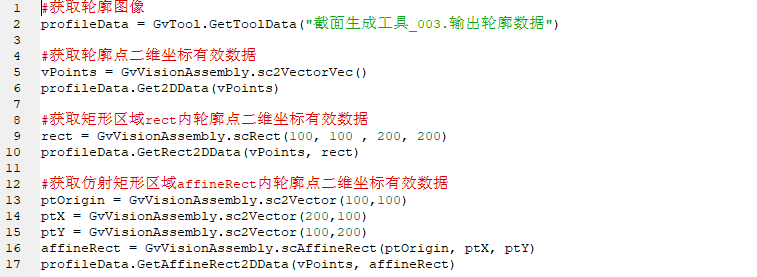

表示轮廓图像。
| 分类 | 接口名称 | 接口描述 |
|---|---|---|
| 构造 | GsProfileData | GsProfileData()默认构造函数 |
| 函数 | IsValid | 获取图像是否有效 |
| ProfileDataNum | 获取轮廓数据量 | |
| ValidProfileDataNum | 获取轮廓有效点数量 | |
| MaxXData | 获取最大X值 | |
| MinXData | 获取最小X值 | |
| MaxZData | 获取最大Z值 | |
| MinZData | 获取最小Z值 | |
| GetRangeParam | 获取深度数据参数 | |
| Get2DData | 获取轮廓点二维坐标有效数据 | |
| GetRect2DData | 获取矩形区域内轮廓点二维坐标有效数据 | |
| GetAffineRect2DData | 获取仿射矩形区域内轮廓点二维坐标有效数据 | |
| FormLinearI2P | 获取图像空间到物理空间的二维线性变换 | |
| FormLinearP2I | 获取物理空间到图像空间的二维线性变换 |
功能：默认构造函数。
参数：无
返回值：无
功能：获取图像是否有效。
返回值：图像是否有效，bool类型。
功能：获取轮廓数据量。
返回值：轮廓中总点数，整型。
功能：获取轮廓有效点数量。
返回值：轮廓中有效点数，整型。
功能：获取最大X值。
返回值：最大X值，float类型。
功能：获取最小X值。
返回值：最小X值，浮点数类型。
功能：获取最大Z值。
返回值：最大Z值，浮点数类型。
功能：获取最小Z值。
返回值：最小Z值，浮点数类型。
功能：获取深度数据参数。
返回值：深度数据参数，scRangeParam类型。
功能：获取轮廓点二维坐标有效数据。
参数：
返回值：bool类型，表示是否获取成功。
功能：获取矩形区域内轮廓点二维坐标有效数据。
参数：
vPoints：二维坐标有效数据，sc2Vector类型数组。
rect：矩形区域，scRect类型。
返回值：bool类型，表示是否获取成功。
功能：获取仿射矩形区域内轮廓点二维坐标有效数据。
参数：
vPoints：二维坐标有效数据，sc2Vector类型数组。
affineRect：仿射矩形区域，scAffineRect类型。
返回值：bool类型，表示是否获取成功。
功能：获取图像空间到物理空间的二维线性变换。
返回值：图像空间到物理空间的二维线性变换，sc2XformLinear类型。
功能：获取物理空间到图像空间的二维线性变换。
返回值：物理空间到图像空间的二维线性变换，sc2XformLinear类型。
无。
